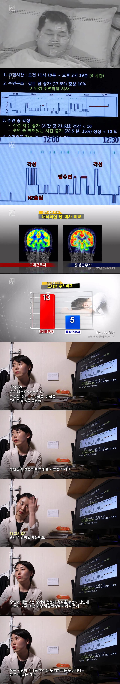

자동차 부품공장에서 10년간 주야 맞교대로 근무한 47세 근로자가 수면검사를 했는데
야간근무 후 총 수면시간이 고작 3시간으로 일반 근무자의 평균 6시간 30분의 절반도 안 됨
잠들어도 깊게 못 자고 계속 깨면서 얕은 잠과 렘수면을 불규칙하게 반복했고 수면 중 16%는 깨어 있는 상태였음
결국 장기간의 주야 교대근무가 수면을 심각하게 망가뜨리고
이런 만성적인 수면 부족이 심혈관질환과 각종 성인병 위험까지 높일 수 있다고 함
물론 야간하면 건강에 더 안좋겠지만 최소한 평균적인 케이스를 가지고 해야지. 3시간 자는 사람을?
백수도 3시간만 자면 건강이 나빠지는데